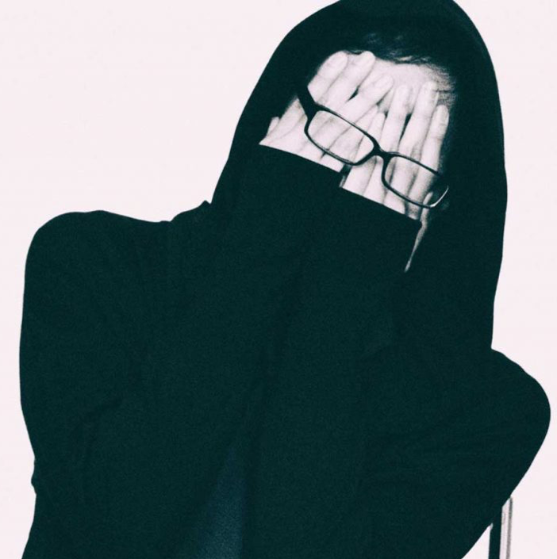
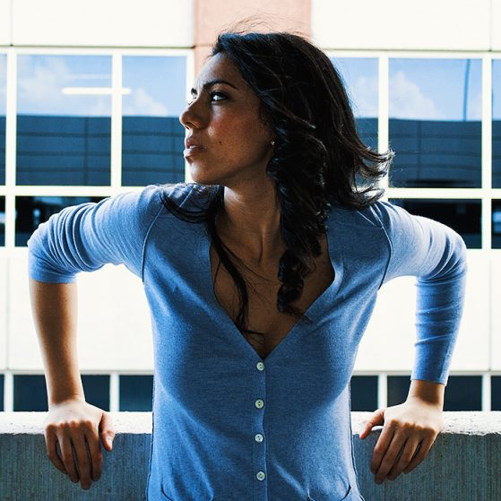

EDM producer REZZ, born Isabelle Rezazadeh, is yet another young artist that began humbly on SoundCloud and graduated to being a pro, signing with a label and performing at festivals. 22 now, she was only 16 when she began DJing in Ontario. She often snuck into EDM shows in Toronto, and after seeing a live set by legendary producer/DJ deadmau5, she decided to switch from DJing to producing her own music. She began to upload unique, bass heavy, stripped down techno to her SoundCloud profile, and was soon discovered by superstar producer Skrillex via his Nest group, which combs the internet finding new talent and helping them get a platform to reach more audiences. It didn't take long for REZZ, with her dark, edgy, and genre-bending techno, to get signed to deadmau5's mau5trap record label, where she began releasing singles and short EPs. Over the next year, she appeared at dozens of major EDM festivals and in 2017, she released her first full album, Mass Manipulation. REZZ, known for her unique swirly light-up glasses, recently began a world tour in support of the album.
This track is a remix that REZZ did for a mau5trap compilation of songs by some of deadmau5's favorite artists from his label. The original track was composed by mau5trap producer No Mana with singer Zashanell on vocals. Originally a down-tempo, trip-hop style, REZZ re-worked it in her signature style of dark wobble bass, sparse instrumental stabs, and heavy hitting beats contrasted with moments of floating open spaces. She infused a brooding quality to "Clear" that completely changes the feel of the lyrical content and voice despite leaving the original vocal in the mix.
Producer No Mana is one of the most active artists on the mau5trap label. He has an impressive list of singles, remixes, and EP's, including 2017's Above the Blue, which featured the original version of "Clear".
Singer Zashanell, hailing from Miami, has been a frequent feature on many recent EDM releases from a variety of artists, and works especially closely with No Mana on many of his songs. She is still developing and working towards a future solo album.